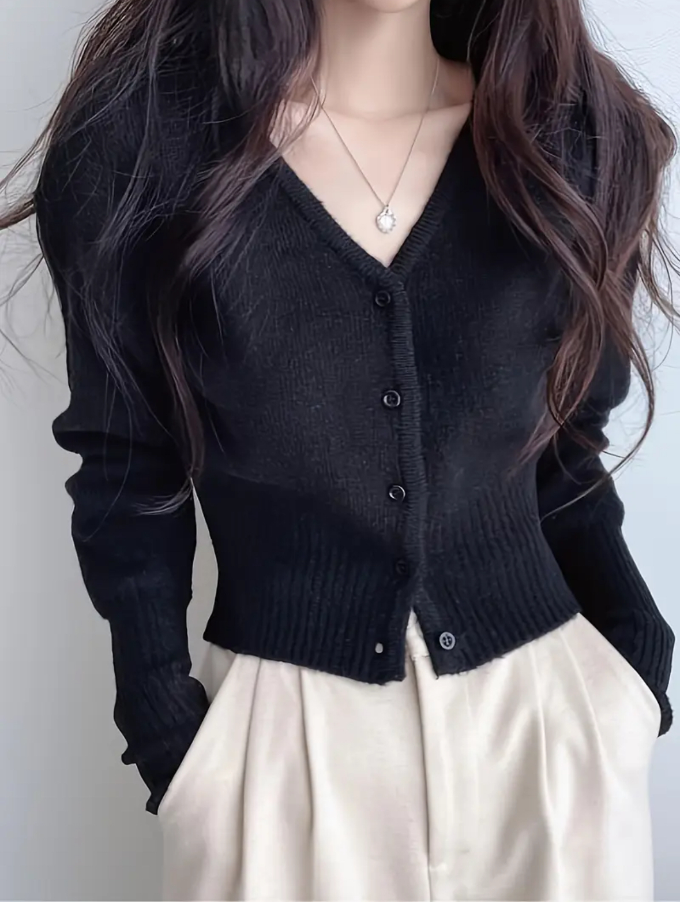
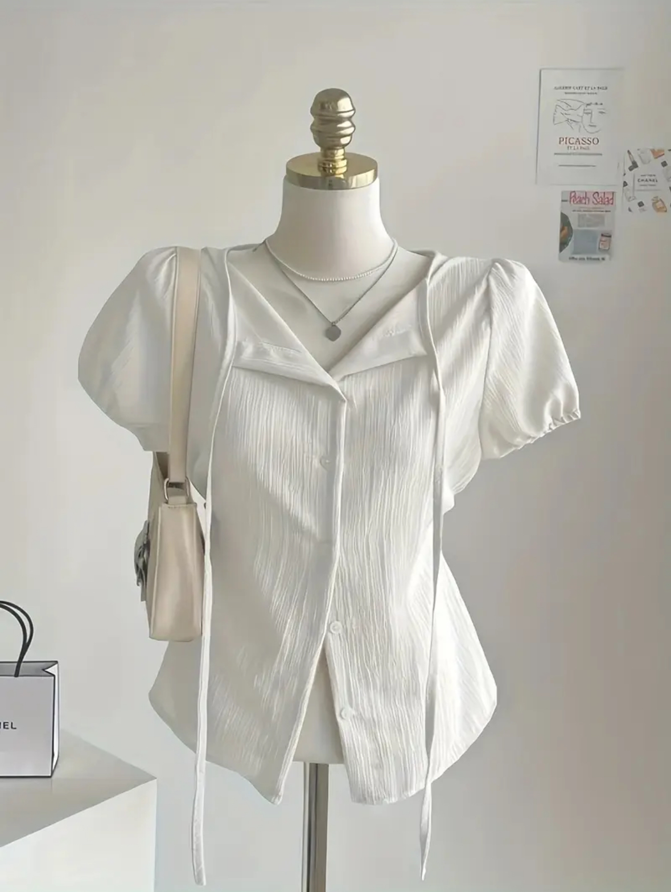
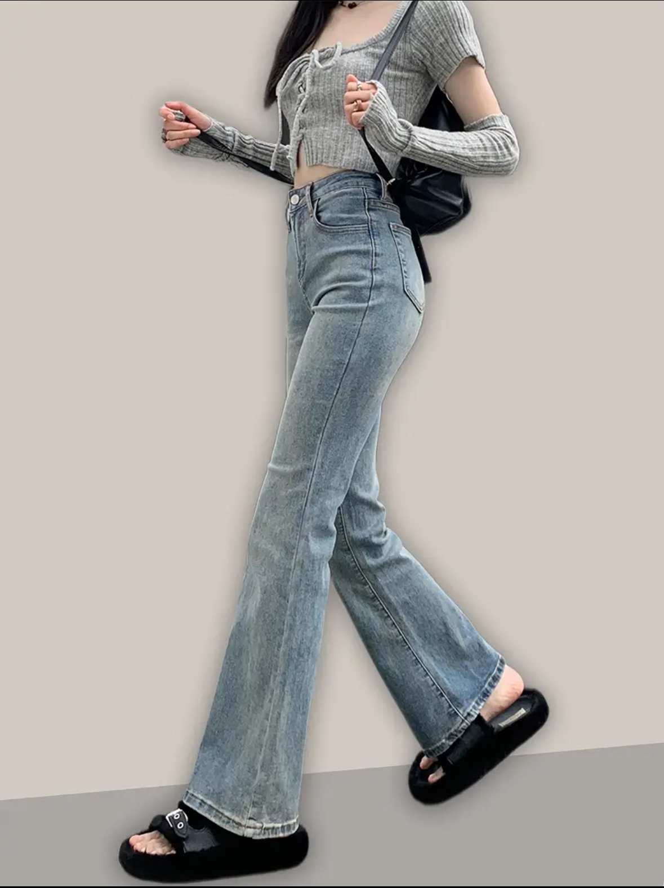
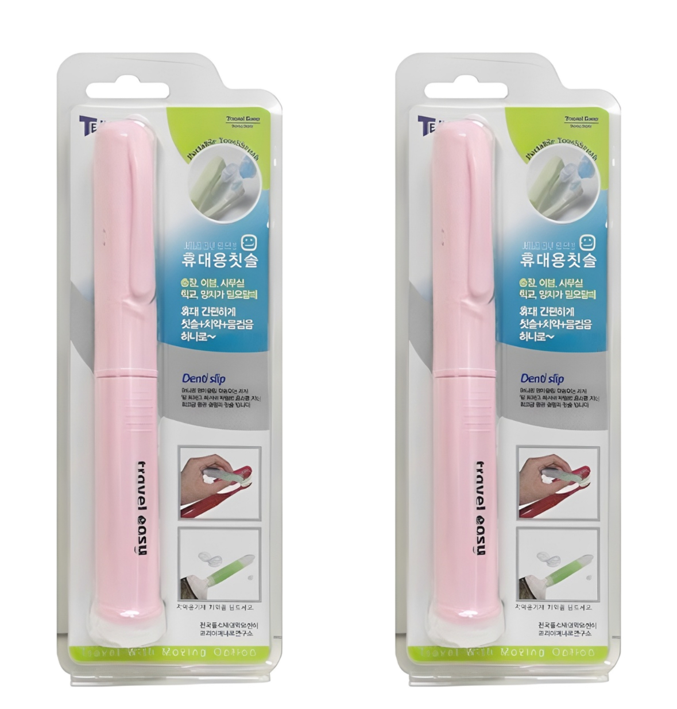
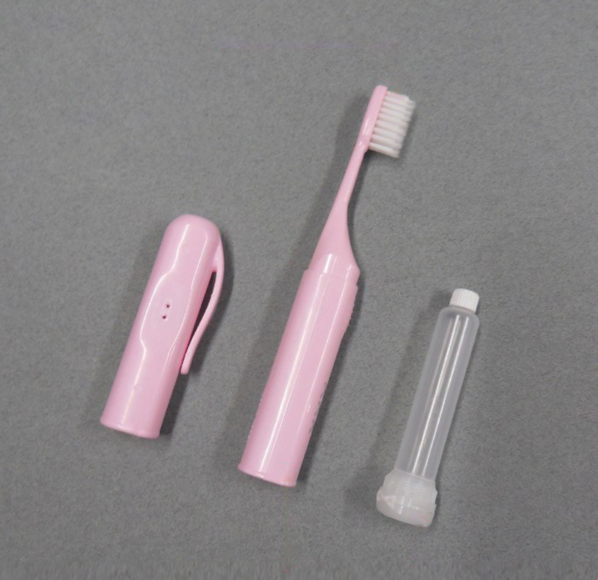
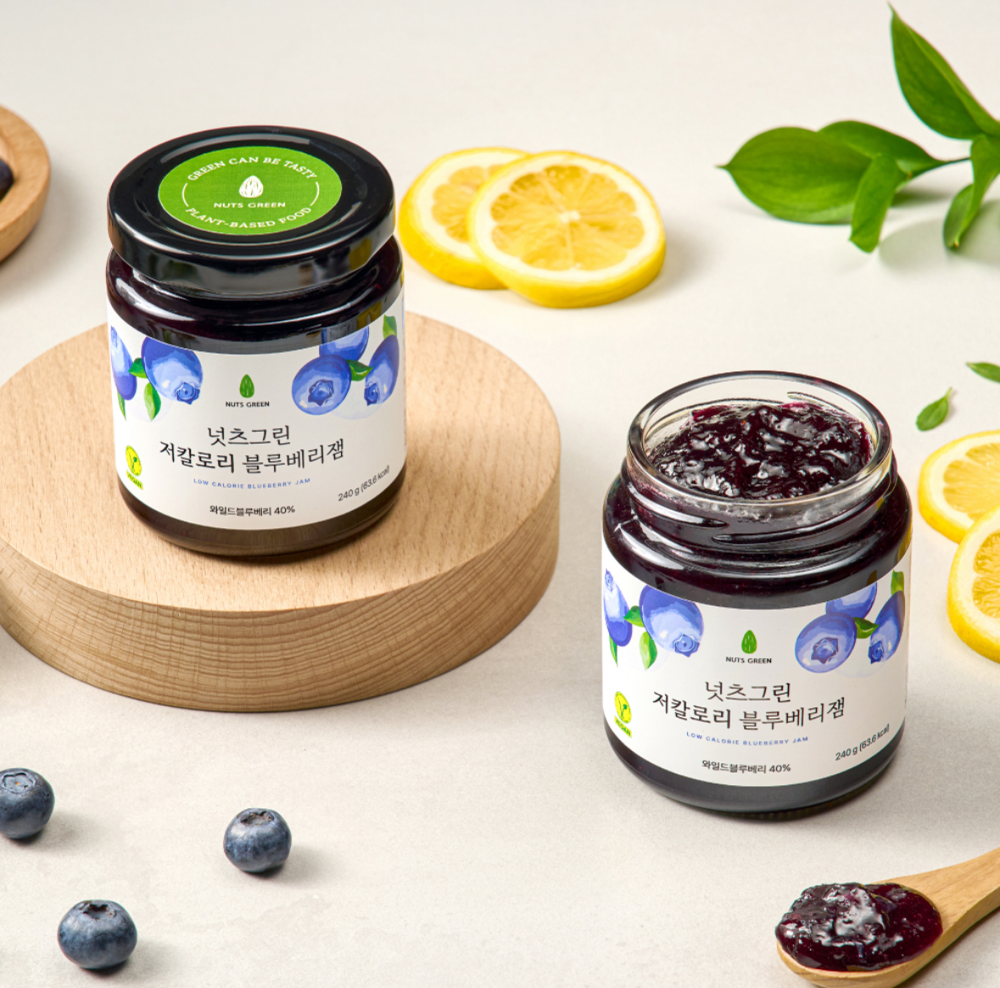

 저렴하면서도 피부에 착 붙는 핏이 마음에 드는 가디건. 가격:14,151원
 드롭 스트링 디자인으로 되어있는 사각사각한 재질의 여름 블라우스. 스트링을 묶지 않고 입는 것이 예쁘다. 가격:13,933원
 밑단으로 갈 수록 넓게 퍼지는 세미부츠컷 청바지. 가격:18,406원
쿠팡 장바구니
💎일상의 질을 올려주는 소소한 추천 아이템💎
 요즘 유용하게 사용하고 있는 휴대용 칫솔 세트. 가격:7,900원
 이런 식으로 치약을 칫솔 몸통 안에 보관할 수 있어 용이하다.
 블루베리 본연의 새콤함이 잘 살아있는 넛츠그린의 블루베리 잼. 저칼로리 잼이어서 아침식사 때 자주 애용한다. 가격:10,800원